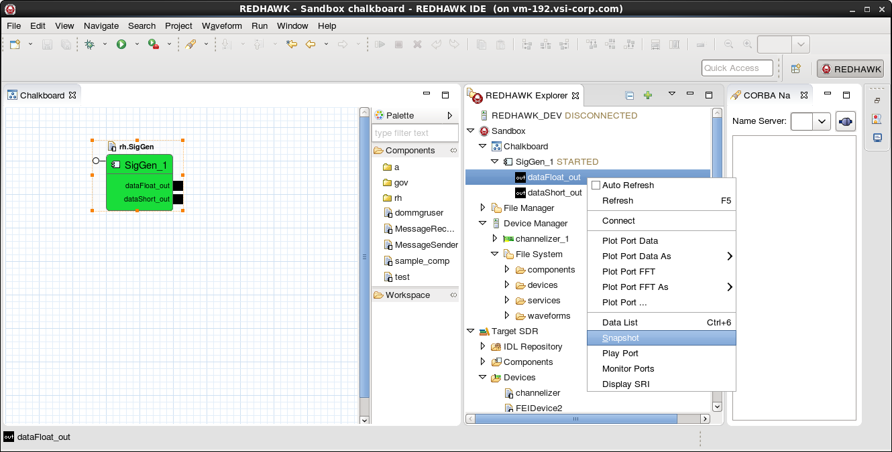

Snapshot Tool
The Snapshot Tool enables users to save data from any BulkIO port to a file. The following procedure explains how to use the Snapshot Tool.
To open the Snapshot Wizard, right-click an output port in the Chalkboard or the REDHAWK Explorer and select Snapshot from the context menu:
Output Port Context Menu

The Snapshot Wizard is displayed:
Snapshot Wizard

To specify how much data is captured, select the capture mode from the first combo box. The following capture modes are supported:
- Number of Samples: Collects the number of samples specified by the text field to the right.
- Indefinitely: Collects samples until the user stops the snapshot or an end of stream occurs.
- Clock Time: Collects samples for a set period of time in real time set by the text field to the right (in seconds).
- Sample Time: Collects samples for a period of time as specified by the delta and number of samples (time = delta * number of samples), set in the text field to the right.
Optionally, enter a custom Connection ID in the Connection ID (Optional) field.
To specify the the file type to use when saving data, select a file type from the File Type combo box. The supported file types include:
- Binary files (.bin & .SRI): Saves data from the port to a
.binfile and saves the metadata (SRI, start time, end time, data type, and number of samples) to an.SRIfile. - Binary files (.bin & .xml): Saves data from the port to a
.binfile and saves the metadata (SRI, start time, end time, data type, and number of samples) to an.xmlfile. - Midas BLUE File (.tmp): Saves output data and metadata to a BLUE
.tmpfile.
- Binary files (.bin & .SRI): Saves data from the port to a
To specify where to save the file, you have two options.
- To save the file to a location other than the workspace, deselect the Save to Workspace checkbox, click Browse, navigate to the desired location, and click OK.
To save the file in the workspace, select the Save to Workspace checkbox and select the file or directory in the displayed tree of workspace files and folders. Saving the file in the workspace automatically refreshes the project, and the files can be accessed in the IDE.
Snapshot Save to Workspace Navigation Tree

To add folders to the workspace, right-click the existing folder where the new folder is desired. A New Folder window is displayed. Enter the name of the folder and click Finish.
Snapshot New Folder Window

To delete files from the workspace, right-click the item you want to delete and select Delete. When prompted, verify the deletion request.
To be prompted before existing files are overwritten when the new snapshot is created, select the Confirm overwrite checkbox. If this option is not selected, any existing files are automatically overwritten when the new snapshot is created.
Click Finish.
The progress view is displayed. To stop a snapshot prematurely, click Cancel Operation (the red square icon) next to the job in the progress view.
Snapshot - Progress View

When the snapshot completes, the completed job is shown in the progress view:
Snapshot - Completed Job

To view the results of the snapshot, click Finished. The following output message is displayed:
Snapshot - Results Dialog

If only a few files are written, then the output message lists all the files created by the snapshot. If a large number of files are written, the output message lists the base name of the files and the number of each type of file made.
Click OK.